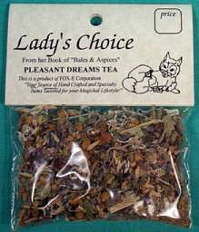

Herbs, Specialty Teas and Incense
Brew up some wonderful "potions" with these teas!
Brid's Closet
296 Main Street, Cornwall NY 12518
(845)458-8726
Organic herbs for every need! Please call or write us for a complete a-z list of our herbs and oils for every use!
Here is just a partial list of the many Herbs that we have ! Alfalfa, Agrimony, Anise, Boneset, Burdock, Catnip, Chamomile, Clove, Coltsfoot, Comfrey, Damiana, Dandelion, Echinacea, Elecampane, Eucalyptus,Feverfew, Ginko, Galangel, Hawthorne, Hops, Hyssop, Irish Moss, Juniper, LemonGrass, Licorice, Lavender, Lobelia, Lotus, Mandrake, Marjoram, Mistletoe, Mullein, Mugwort,Myrrh, Nettle, Oat straw, Passion Flower, Pennyroyal, Peppermint, Rosemary, Rue, Sage, St. Johnswort, Skullcap, Slippery Elm ,Spearmint, Salvia, Uva Ursi,Valarian, Violet, White Willow Bark, Witchazel, Wormwood and much, much more! Call or write for any special needs or wants that you may have! We do ship orders! |
We have a full line of organic essential oils! Lavender,tea tree,eucalyptus,patchouli,frankencense,myrhh,rose,citrus,amber. Magical oils-sabbat,moon,God,Goddess,Kyphi,protection,banishing,money,3 kings, 7 african powers and much more |

Body Builder Tea 1/3 oz $2.00~ (Builds body immunity) Specially formulated to strengthen immunity with wormwood, sage speedwell, licorice, ginseng, heal all, pau d`arco and echinacea. Loose tea
Prosperity Tea 1/3oz $2.00~ Bring abundance into your life with the help of moneywort, sage, parsley, meadowsweet, mistletoe, basil, rose hips, clover & black tea base combined to attract the forces of abundance. Loose tea.
Pleasant Dreams Tea 1/3 oz  $2.00~A formulation of catnip, mugwort, oakmoss, lavender, linden, chamomile and mistletoe. Loose tea.
High Blood Pressure Tea 1/3 oz $2.00~(Aids in lowering blood pressure) Angelica root, mistletoe, sassafras, marshmallow root, and licorice to soothe hypertension. Loose tea.
Lite Weight Tea 1/3 oz  $2.00~Speed metabolism & retard appetite with this blend of sasparilla, licorice, fennel seed, cornsilk, horehound, bladderwack, hawthorn berries, echinacea, chickweed, burdock root, parsley, kelp, black walnut, kola nuts, uerba mate, cleavers, plantain, spearmint and oakstraw.Loose tea.
$2.00~Speed metabolism & retard appetite with this blend of sasparilla, licorice, fennel seed, cornsilk, horehound, bladderwack, hawthorn berries, echinacea, chickweed, burdock root, parsley, kelp, black walnut, kola nuts, uerba mate, cleavers, plantain, spearmint and oakstraw.Loose tea.
Psychic Tea 1/3 oz $2.00~(Activiates psychic awareness) A formulation of rosemary, clove, eyebright, mistletoe, oakmoss, elecampane and rue. Loose tea.
Lovers Tea 1/3 oz $2.00~(Aprodisiac) Promotes peaceful, loving feelings with lavender, jasmine, lady`s mantle, peach tree leaves, damiana, myrtle and clove. Loose tea.
Monthly Mysteries Tea 1/3 oz $2.00~(For PMS and menopause) This refreshing, restorative tonic is specially formulated for women. Lady`s mantle, motherwort, jasmine, hyssop, arnica, red raspberry. Loose tea.
Loose teas, one package is good enough for 5 plus cups. Not to be used as a substitute for a Doctors care or advice!


TopSite List pagan www.bridscloset.com

Bernadette Montana of Brid's Closet. Resident webmisstress!